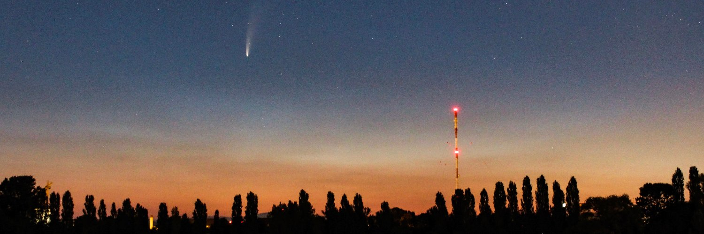

Dr. Marco Aurélio Franco
About me
Hi! My name is Marco Aurélio de Menezes Franco, and I am currently a postdoc researcher at the University of São Paulo, in São Paulo, Brazil, at the Atmospheric Physics Laboratory. My research interests are aligned with the effects and connections between meteorology, ultrafine aerosols (particles with diameters < 50 nm) in Central Amazonia, with measurements conducted at the ATTO (Amazon Tall Tower Observatory) site! Also I have been studying the effects of Amazonian deforestation on greenhouse gases and meteorology, which is the main topic of my Postdoc. I hold a Ph.D. degree in Physics, obtained at the Institute of Physics of the University of São Paulo (USP), on September 15th, 2021, under the supervision of Prof. Dr. Paulo Artaxo. I spent 13 months working at the Max Planck Institute for Chemistry (MPIC), in Mainz, Germany, supervised by Dr. Christopher Pöhlker, where I integrated different databases to look in detail in the sub-50 nm particle aging process in Central Amazonia. If you are interested, my Ph.D. thesis (in English) can be accessed here! I also hold a Master's degree in Applied Physics, obtained at the São Carlos Institute of Physics of USP and Embrapa Instrumentation, under supervision of Dr. Paulino Ribeiro Villas Boas, and a bachelor in Physics, obtained at Department of Physics of the Federal University of São Carlos, whose undergraduate research was also supervised by Dr. Paulino Ribeiro Villas Boas. If you are interested, my dissertation (in Portuguese) can be accessed here!
Research interests
I specialize in studying the intricate relationship between atmospheric meteorological mechanisms and the physicochemical properties of atmospheric aerosols. My primary interests revolve around understanding the mechanisms behind secondary aerosol formation, the processes through which aerosols age, and the radiative impacts of aerosols on the climate. Currently, my research focuses on investigating various atmospheric processes that influence the dynamics of aerosols within the lower Amazonian troposphere's vertical profile. Furthermore, I am actively engaged in studying the complex interplay between greenhouse gases, meteorology, and land use in the Amazon biome. My research extends beyond the borders of Brazil, encompassing neighboring countries as well. By examining these relationships, I aim to contribute to our understanding of the broader implications for the Amazon region and its environmental dynamics.
Watch here my recent public seminar about Land use change in the Amazon: amplifying greenhouse gas emissions and drought conditions.
My scientific infos: Orcid, Scopus, Google Scholar, Lattes Curriculum, Publons, Research Gate
 Comet NEOWISE (C/2020 F3) photographed by me near the Rhine River in Mainz, Germany.